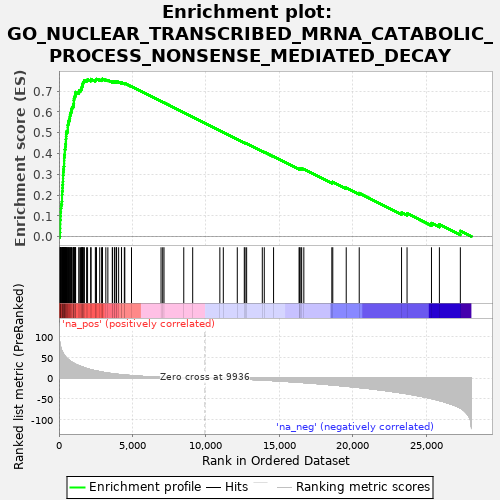
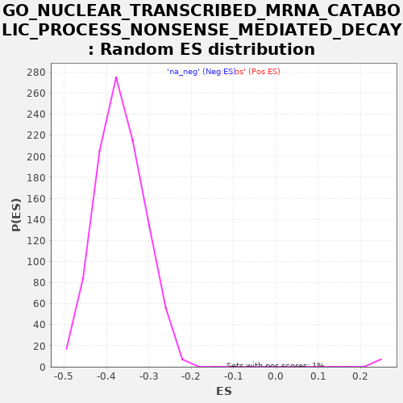

| | | Dataset | PRAD |
| Phenotype | NoPhenotypeAvailable |
| Upregulated in class | na_pos |
| GeneSet | GO_NUCLEAR_TRANSCRIBED_MRNA_CATABOLIC_PROCESS_NONSENSE_MEDIATED_DECAY |
| Enrichment Score (ES) | 0.7592075 |
| Normalized Enrichment Score (NES) | 3.0556536 |
| Nominal p-value | 0.0 |
| FDR q-value | 0.0 |
| FWER p-Value | 0.0 |
Table: GSEA Results Summary

Fig 1: Enrichment plot: GO_NUCLEAR_TRANSCRIBED_MRNA_CATABOLIC_PROCESS_NONSENSE_MEDIATED_DECAY
Profile of the Running ES Score & Positions of GeneSet Members on the Rank Ordered List
| PROBE | GENE SYMBOL | GENE_TITLE | RANK IN GENE LIST | RANK METRIC SCORE | RUNNING ES | CORE ENRICHMENT | | 1 | RPL36 | | | 65 | 81.451 | 0.0187 | Yes |
| 2 | RPL37 | | | 74 | 79.799 | 0.0390 | Yes |
| 3 | RPS2 | | | 78 | 79.193 | 0.0593 | Yes |
| 4 | RPL39 | | | 81 | 78.684 | 0.0795 | Yes |
| 5 | RPL7A | | | 99 | 76.307 | 0.0986 | Yes |
| 6 | PABPC1 | | | 107 | 75.197 | 0.1177 | Yes |
| 7 | RPL29 | | | 126 | 72.900 | 0.1359 | Yes |
| 8 | RPS18 | | | 143 | 71.292 | 0.1537 | Yes |
| 9 | RPL36A | | | 197 | 65.045 | 0.1686 | Yes |
| 10 | RPL12 | | | 207 | 64.611 | 0.1849 | Yes |
| 11 | RPL35A | | | 208 | 64.592 | 0.2016 | Yes |
| 12 | RPL8 | | | 216 | 63.979 | 0.2179 | Yes |
| 13 | RPLP0 | | | 236 | 62.845 | 0.2334 | Yes |
| 14 | RPL14 | | | 242 | 62.475 | 0.2493 | Yes |
| 15 | RPL13A | | | 266 | 60.493 | 0.2641 | Yes |
| 16 | RPL24 | | | 274 | 59.799 | 0.2793 | Yes |
| 17 | RPS7 | | | 277 | 59.656 | 0.2946 | Yes |
| 18 | RPL32 | | | 288 | 58.815 | 0.3094 | Yes |
| 19 | RPL19 | | | 304 | 57.642 | 0.3237 | Yes |
| 20 | RPL27A | | | 330 | 56.666 | 0.3374 | Yes |
| 21 | RPL28 | | | 348 | 55.733 | 0.3512 | Yes |
| 22 | RPL37A | | | 350 | 55.690 | 0.3655 | Yes |
| 23 | RPL38 | | | 353 | 55.499 | 0.3798 | Yes |
| 24 | RPL3 | | | 364 | 55.106 | 0.3936 | Yes |
| 25 | RPS13 | | | 397 | 52.928 | 0.4062 | Yes |
| 26 | RPS9 | | | 398 | 52.836 | 0.4198 | Yes |
| 27 | RPS17 | | | 434 | 51.388 | 0.4318 | Yes |
| 28 | RPS4X | | | 441 | 50.900 | 0.4447 | Yes |
| 29 | RPS11 | | | 468 | 50.027 | 0.4567 | Yes |
| 30 | RPS8 | | | 470 | 49.870 | 0.4695 | Yes |
| 31 | RPL15 | | | 482 | 49.245 | 0.4818 | Yes |
| 32 | RPS21 | | | 488 | 49.045 | 0.4943 | Yes |
| 33 | RPL23 | | | 511 | 48.312 | 0.5059 | Yes |
| 34 | RPS24 | | | 597 | 45.593 | 0.5147 | Yes |
| 35 | PPP2R1A | | | 599 | 45.572 | 0.5264 | Yes |
| 36 | RPL11 | | | 602 | 45.373 | 0.5380 | Yes |
| 37 | RPS29 | | | 632 | 44.391 | 0.5484 | Yes |
| 38 | RPL31 | | | 659 | 43.742 | 0.5588 | Yes |
| 39 | RPS10 | | | 725 | 41.907 | 0.5673 | Yes |
| 40 | RPL30 | | | 741 | 41.535 | 0.5774 | Yes |
| 41 | RPL4 | | | 755 | 41.110 | 0.5876 | Yes |
| 42 | RPL18 | | | 790 | 40.059 | 0.5967 | Yes |
| 43 | RPL27 | | | 836 | 39.009 | 0.6052 | Yes |
| 44 | RPLP1 | | | 853 | 38.636 | 0.6145 | Yes |
| 45 | RPS3 | | | 892 | 37.790 | 0.6229 | Yes |
| 46 | RPLP2 | | | 966 | 36.286 | 0.6297 | Yes |
| 47 | RPL10 | | | 982 | 36.075 | 0.6384 | Yes |
| 48 | RPS15 | | | 1012 | 35.553 | 0.6466 | Yes |
| 49 | RPS19 | | | 1013 | 35.524 | 0.6557 | Yes |
| 50 | RPS6 | | | 1022 | 35.333 | 0.6646 | Yes |
| 51 | RPL7 | | | 1048 | 34.879 | 0.6727 | Yes |
| 52 | RPL18A | | | 1099 | 33.886 | 0.6796 | Yes |
| 53 | RPS16 | | | 1124 | 33.427 | 0.6874 | Yes |
| 54 | UBA52 | | | 1131 | 33.233 | 0.6957 | Yes |
| 55 | RPSA | | | 1355 | 29.910 | 0.6955 | Yes |
| 56 | RPS14 | | | 1367 | 29.730 | 0.7028 | Yes |
| 57 | RPS25 | | | 1467 | 28.394 | 0.7065 | Yes |
| 58 | RPL23A | | | 1520 | 27.788 | 0.7118 | Yes |
| 59 | RPL22 | | | 1543 | 27.502 | 0.7182 | Yes |
| 60 | EIF3E | | | 1570 | 27.084 | 0.7242 | Yes |
| 61 | RPS15A | | | 1601 | 26.629 | 0.7300 | Yes |
| 62 | RPL26 | | | 1611 | 26.488 | 0.7365 | Yes |
| 63 | EIF4G1 | | | 1644 | 26.031 | 0.7421 | Yes |
| 64 | RPL35 | | | 1691 | 25.390 | 0.7470 | Yes |
| 65 | RPL5 | | | 1726 | 25.009 | 0.7522 | Yes |
| 66 | RPS5 | | | 1880 | 23.053 | 0.7527 | Yes |
| 67 | RPL10A | | | 1945 | 22.442 | 0.7562 | Yes |
| 68 | EIF4A3 | | | 2157 | 20.239 | 0.7539 | Yes |
| 69 | RPS20 | | | 2183 | 20.032 | 0.7581 | Yes |
| 70 | RPS3A | | | 2475 | 17.606 | 0.7523 | Yes |
| 71 | HELZ2 | | | 2513 | 17.372 | 0.7554 | Yes |
| 72 | RPL34 | | | 2552 | 17.053 | 0.7585 | Yes |
| 73 | MAGOHB | | | 2773 | 15.582 | 0.7546 | Yes |
| 74 | RBM8A | | | 2901 | 14.693 | 0.7539 | Yes |
| 75 | RPS23 | | | 2957 | 14.304 | 0.7556 | Yes |
| 76 | NCBP2 | | | 2960 | 14.290 | 0.7592 | Yes |
| 77 | RPS28 | | | 3188 | 12.979 | 0.7544 | No |
| 78 | RPS27A | | | 3327 | 12.253 | 0.7527 | No |
| 79 | SMG8 | | | 3628 | 10.708 | 0.7447 | No |
| 80 | RPS4Y1 | | | 3650 | 10.590 | 0.7467 | No |
| 81 | RPS26 | | | 3788 | 9.983 | 0.7443 | No |
| 82 | GSPT1 | | | 3802 | 9.921 | 0.7464 | No |
| 83 | RPL17 | | | 3917 | 9.455 | 0.7448 | No |
| 84 | RPS12 | | | 3919 | 9.441 | 0.7472 | No |
| 85 | MAGOH | | | 4061 | 8.900 | 0.7445 | No |
| 86 | RPL9 | | | 4252 | 8.256 | 0.7398 | No |
| 87 | PPP2CA | | | 4258 | 8.245 | 0.7417 | No |
| 88 | GSPT2 | | | 4448 | 7.616 | 0.7369 | No |
| 89 | PNRC2 | | | 4481 | 7.498 | 0.7377 | No |
| 90 | RNPS1 | | | 4936 | 6.057 | 0.7231 | No |
| 91 | UPF1 | | | 6947 | 2.040 | 0.6517 | No |
| 92 | NBAS | | | 7061 | 1.900 | 0.6481 | No |
| 93 | RPL13 | | | 7148 | 1.812 | 0.6455 | No |
| 94 | SMG7 | | | 8494 | 0.595 | 0.5976 | No |
| 95 | RPS27 | | | 9102 | 0.277 | 0.5759 | No |
| 96 | RPL21 | | | 10951 | -0.558 | 0.5100 | No |
| 97 | PARN | | | 11187 | -0.754 | 0.5018 | No |
| 98 | PPP2R2A | | | 12138 | -1.759 | 0.4682 | No |
| 99 | ETF1 | | | 12615 | -2.374 | 0.4518 | No |
| 100 | NCBP1 | | | 12668 | -2.451 | 0.4506 | No |
| 101 | RPL41 | | | 12775 | -2.587 | 0.4475 | No |
| 102 | SMG9 | | | 13841 | -4.255 | 0.4105 | No |
| 103 | UPF2 | | | 13976 | -4.520 | 0.4069 | No |
| 104 | DCP1A | | | 14608 | -5.772 | 0.3858 | No |
| 105 | DCP2 | | | 16345 | -9.650 | 0.3262 | No |
| 106 | PNLDC1 | | | 16384 | -9.738 | 0.3273 | No |
| 107 | SMG5 | | | 16468 | -9.983 | 0.3269 | No |
| 108 | SKIV2L | | | 16522 | -10.118 | 0.3277 | No |
| 109 | SECISBP2 | | | 16669 | -10.491 | 0.3251 | No |
| 110 | UPF3A | | | 18575 | -15.983 | 0.2611 | No |
| 111 | SMG1 | | | 18640 | -16.213 | 0.2630 | No |
| 112 | DCP1B | | | 19555 | -19.213 | 0.2353 | No |
| 113 | DHX34 | | | 20440 | -22.306 | 0.2094 | No |
| 114 | UPF3B | | | 23321 | -35.347 | 0.1155 | No |
| 115 | CASC3 | | | 23696 | -37.265 | 0.1118 | No |
| 116 | SMG6 | | | 25359 | -48.752 | 0.0649 | No |
| 117 | EXOSC10 | | | 25898 | -53.476 | 0.0594 | No |
| 118 | CTIF | | | 27325 | -71.416 | 0.0269 | No |
Table: GSEA details [plain text format]

Fig 2: GO_NUCLEAR_TRANSCRIBED_MRNA_CATABOLIC_PROCESS_NONSENSE_MEDIATED_DECAY: Random ES distribution
Gene set null distribution of ES for GO_NUCLEAR_TRANSCRIBED_MRNA_CATABOLIC_PROCESS_NONSENSE_MEDIATED_DECAY